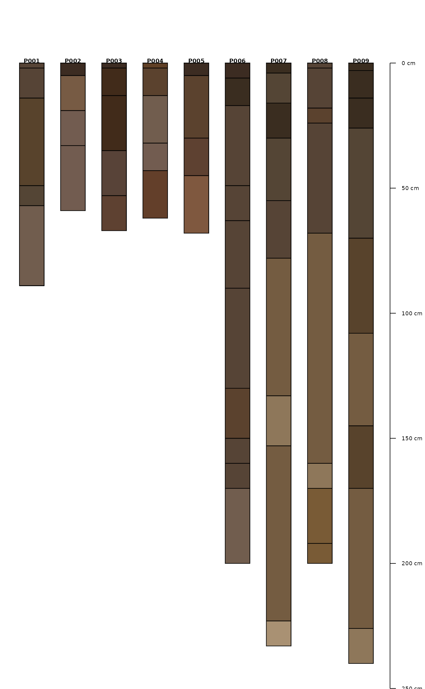
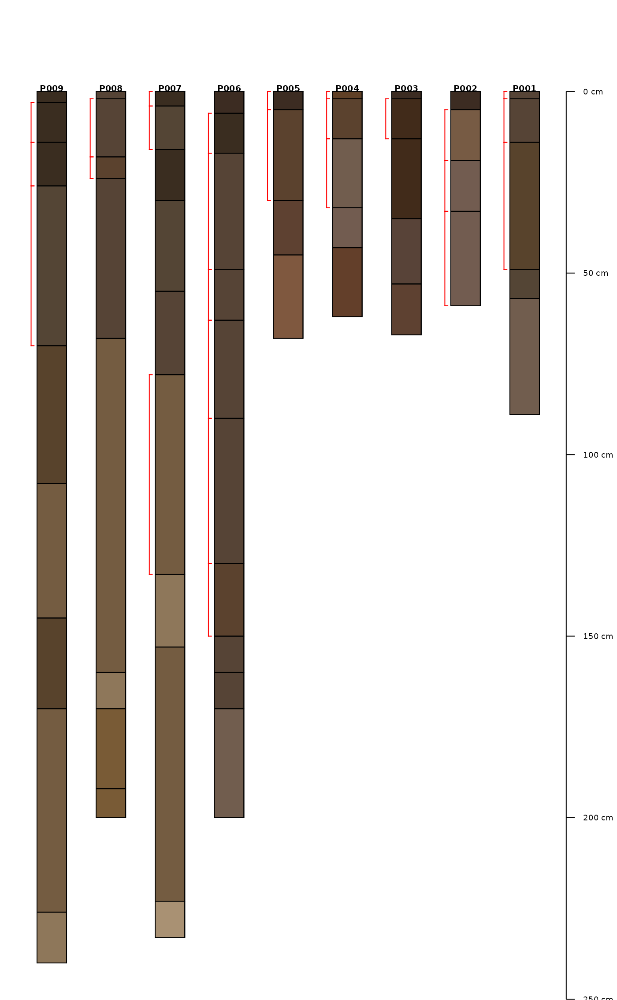

Add depth brackets to soil profile sketches.
addBracket(
x,
label.cex = 0.75,
tick.length = 0.05,
arrow.length = 0.05,
offset = -0.3,
missing.bottom.depth = NULL,
...
)data.frame object containing idname(x), top, bottom, and optionally label columns
scaling factor for label font
length of bracket "tick" mark
length of arrowhead
left-hand offset from each profile
distance (in depth units) to extend brackets that are missing a lower depth (defaults to max depth of collection)
further arguments passed on to segments or arrows
x may contain multiple records per profile. Additional examples can be found in this tutorial.
This is a low-level plotting function: you must first plot a SoilProfileCollection object before using this function.
# sample data
data(sp1)
# add color vector
sp1$soil_color <- with(sp1, munsell2rgb(hue, value, chroma))
# promote to SoilProfileCollection
depths(sp1) <- id ~ top + bottom
# plot profiles
par(mar = c(0, 0, 0, 1))
plotSPC(sp1, width = 0.3)

# extract min--max depths associated with all A horizons
# result is a single-row data.frame / profile
combinedBracket <- function(i) {
h <- horizons(i)
idn <- idname(i)
this.id <- h[[idn]][1]
idx <- grep('^A', h$name)
res <- data.frame(
id = this.id,
top = min(h$top[idx]),
bottom = max(h$bottom[idx], na.rm=TRUE)
)
names(res)[1] <- idn
return(res)
}
# return matching horizon top / bottom depths for A or C horizons
# result is a 0 or more row data.frame / profile
individualBrackets <- function(i) {
h <- horizons(i)
idn <- idname(i)
this.id <- h[[idn]][1]
idx <- grep('^A|^C', h$name)
res <- data.frame(
id = this.id,
top = h$top[idx],
bottom = h$bottom[idx]
)
names(res)[1] <- idn
return(res)
}
# combined brackets
b1 <- profileApply(sp1, combinedBracket, frameify = TRUE)
# individual brackets
b2 <- profileApply(sp1, individualBrackets, frameify = TRUE)
# plot in reverse order
plotSPC(sp1, plot.order = rev(1:length(sp1)), width = 0.25)
# note that plotting order is derived from the call to `plotSPC(sp1)`
addBracket(b1, col='red', offset = -0.35)
# plot in reverse order
plotSPC(sp1, plot.order = rev(1:length(sp1)), width = 0.25)
# note that plotting order is derived from the call to `plotSPC(sp1)`
addBracket(b2, col='red', offset = -0.35)
